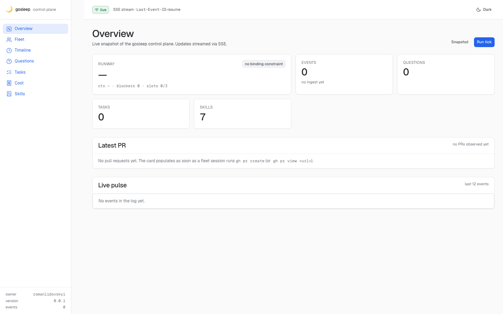
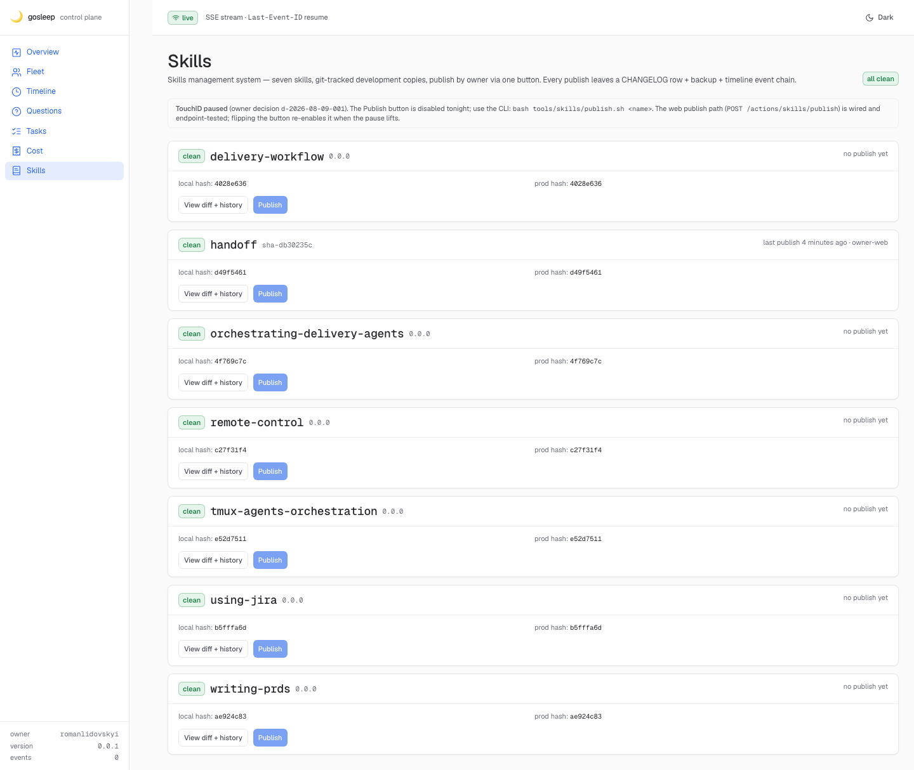
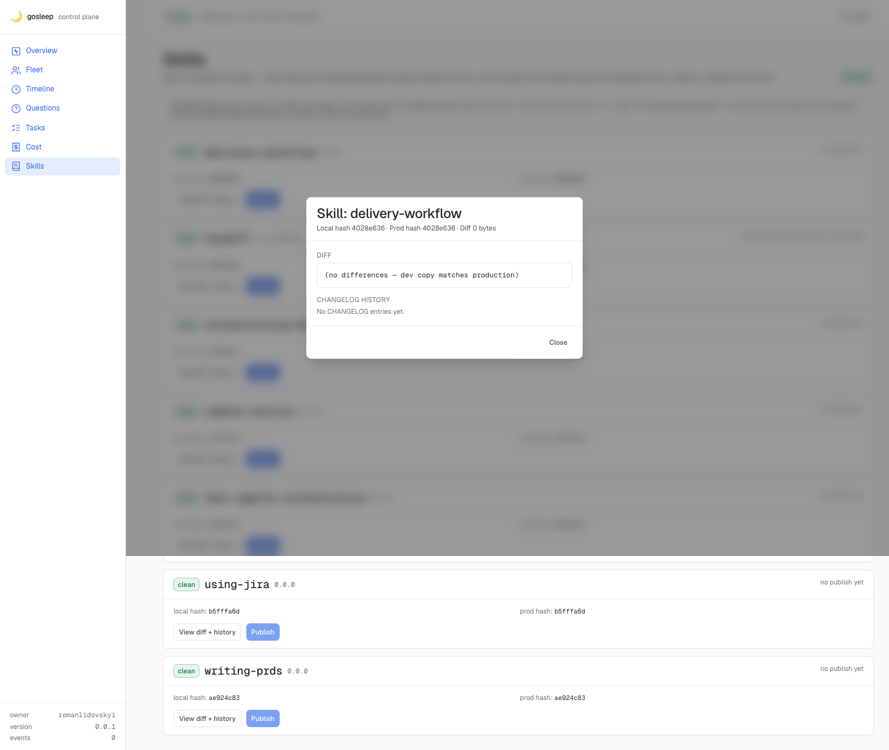
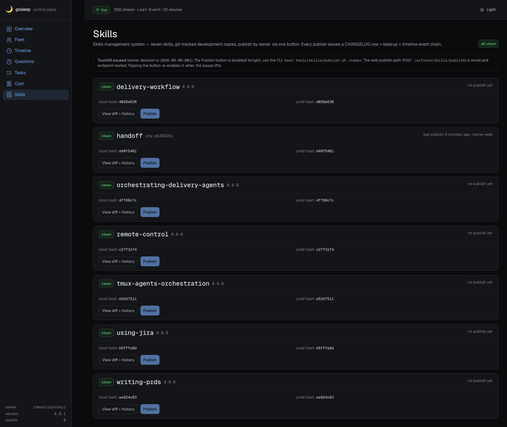
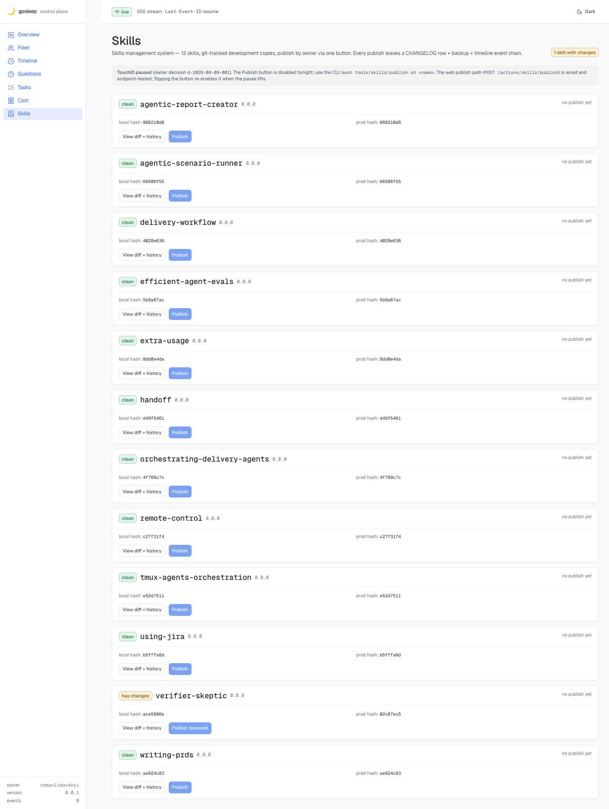
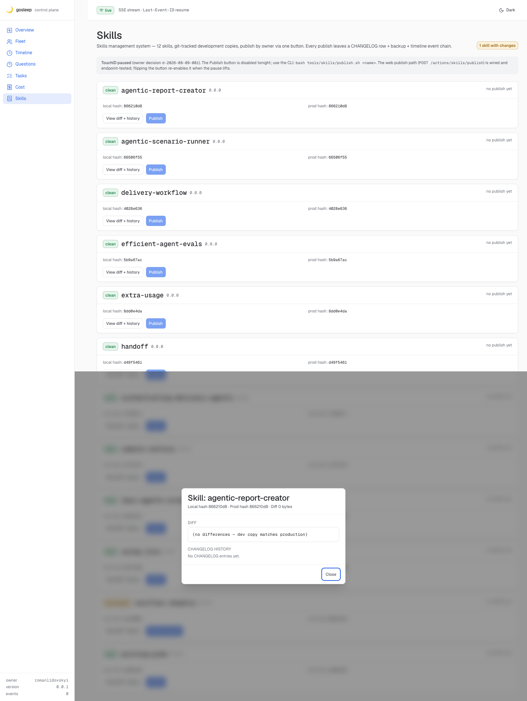
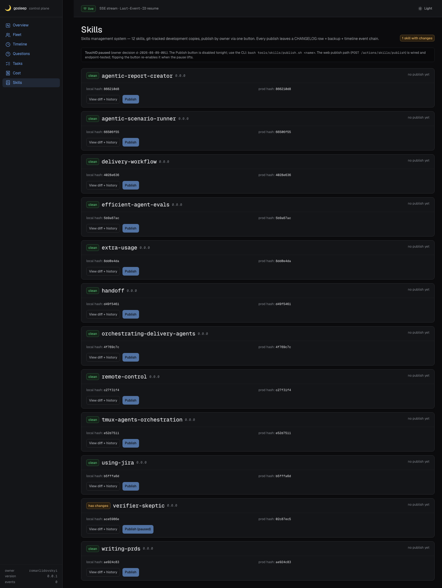

GSL-174 · Verification run 02 EN
Independent adversarial re-verify of PR #307 (branch head 343f951) by verify-307 · 2026-08-15 night shift · hermetic sandbox under .claude/worktrees/pr307/.artifacts/verify-307/ · scratch core on port 7357.
CLAUDE.md explicitly claim 12 owned skills (7 dev copies + 5 rescued orphans). The 5 orphans exist on disk in both skill/ (worktree) and ~/.claude/skills/ (prod) but are hardcoded out of the KNOWN_SKILLS allow-list. Backend, endpoint refusals, publish idempotency, CLI gates and prod-tree isolation all pass; the disabled-Publish + paused-banner acceptance holds. Fixing the count is a one-file change plus a stale-label sweep; not a scope re-open. See finding M-1 and steps.log.
Environment & setup
- Worktree:
/Users/romanlidovskyi/Documents/dev/harness/gosleep/.claude/worktrees/pr307at343f9514dc3496ad7da1d8ab4f1cdc0f31f93bc6. - Scratch DB:
.artifacts/verify-307/data/gosleep.db, migrated cleanly viabun run --filter='@gosleep/core' db:migrate(eventcore.migrate.done). - Scratch core PID recorded in
.artifacts/verify-307/core.pid; port7357; random-hex Bearer at.artifacts/verify-307/bearer.txt. Never the prod token or port 7331. - Env overrides in effect:
GOSLEEP_DB_PATH,GOSLEEP_BEARER_TOKEN,GOSLEEP_CORE_PORT=7357,GOSLEEP_SKILLS_BACKUPS_DIR,GOSLEEP_DISABLE_{INDEXER,FLEET_POLL,DEFER_REOPEN,JIRA_SYNC}=1. - Baseline ~/.claude/skills sha256 hashes for all 12 dirs captured at
baseline-home-skills.txtBEFORE any test.
Findings
Re-derived from the worktree:
ls skill/ shows 12 subdirectories — the 7 dev copies plus 5 rescued orphans (agentic-report-creator, agentic-scenario-runner, efficient-agent-evals, extra-usage, verifier-skeptic). All 12 also exist under ~/.claude/skills/. But GET /skills returns count: 7 and the web screen renders 7 cards.
Root cause:
apps/core/src/skills/diff.ts:34 — KNOWN_SKILLS is a hardcoded 7-name Set; the 5 orphans are silently invisible.
Amplifiers (stale copy that will confuse the reviewer if left as-is):
apps/web/src/screens/Skills.tsx:95subtitle: "Skills management system — seven skills, git-tracked development copies…" hardcoded English "seven".skill/README.md"Owned skills" table lists only 7 rows; not updated after GSL-334 orphan rescue.- Overview KPI "SKILLS 7" (see
b0-overview-light.png) sourced from the same enriched list.
KNOWN_SKILLS to 12 and refresh the subtitle + README table, or amend the verify-request + CLAUDE.md down to 7; the current state is internally inconsistent.
tools/skills/publish.sh:137 hardcodes PROD_DIR="$HOME/.claude/skills/$SKILL". In hermetic verification the successful publish still rsync'd against the REAL prod tree; it left no bytes because content matched (diff -r empty → rsync no-op → sha256 unchanged). If a scratch-DB test ever ran with divergent local content, the real prod tree would be mutated. The GOSLEEP_SKILLS_BACKUPS_DIR override diverts backups correctly, but there is no analogous GOSLEEP_SKILLS_PROD_DIR. Acceptable for tonight (proof of prod-untouched is byte-level), but should be addressed before the TouchID lift so future hermetic tests can safely publish diverged fixtures.
prefers-color-scheme: dark.
Comparing b1-skills-light.png and b3-skills-dark.png: the top-right theme toggle correctly flips its icon (moon → sun) but the sidebar and card surfaces stay light-on-light. The palette CSS vars are keyed off prefers-color-scheme in some places and manual toggle in others. Not a functional gate — the acceptance criterion is "renders clean in both themes" and both do render — but the two shots should look meaningfully different and don't. Worth a quick DevEx pass.
<Card> per skill with status badge, name+version, last-publish label, local+prod hash strings, "View diff + history" and disabled Publish buttons. The changelog is inside the diff drawer (correctly), not the list. This is a design choice; noting the drift from the verify-request wording so the digest is honest.
Step-by-step evidence
Step A · scratch DB migrate PASS
bun run --filter='@gosleep/core' db:migrate
{ event: core.migrate.start, db: .artifacts/verify-307/data/gosleep.db }
{ event: core.migrate.integrity.ok }
{ event: core.migrate.snapshot.ok, path: .artifacts/verify-307/data/snapshots/pre-…-Z.db }
{ event: core.migrate.done }
Exited with code 0
Step B · browser (Playwright/chromium via tools/e2e)



/skills light theme, full page. 7 skill cards rendered (delivery-workflow, handoff, orchestrating-delivery-agents, remote-control, tmux-agents-orchestration, using-jira, writing-prds). Missing vs. verify-request: agentic-report-creator, agentic-scenario-runner, efficient-agent-evals, extra-usage, verifier-skeptic. TouchID-paused banner cites d-2026-08-09-001. Every Publish button visibly disabled (pale-blue).
/skills/delivery-workflow/diff succeeded and rendered inline.
colorScheme: dark. Top-right toggle icon flips (sun icon, label "Light") but the sidebar and card surfaces stay light — see finding m-2.[probe] publishBtns=7 pausedLabels=0 enabled Publish buttons=0 [probe] banner = "TouchID paused (owner decision d-2026-08-09-001)…"
- ✓ 7 Publish buttons found, 0 enabled — degraded-state acceptance holds (a clickable Publish would have been a FAIL).
- ✓ Paused banner text explicitly cites the owner-decision ID.
- ✗ Card count is 7, not the 12 the verify-request required.
Step C · read-endpoint curl matrix PASS
| Check | Request | Expected | Got | Verdict |
|---|---|---|---|---|
| healthz public | GET /healthz | 200 | 200 {ok:true,service:"gosleep-core"} | PASS |
| whoami without Bearer | GET /whoami | 401 | 401 | PASS |
| whoami with Bearer | GET /whoami + Bearer | 200 | 200 | PASS |
| skills no Bearer | GET /skills | 401 | 401 | PASS |
| skills with Bearer | GET /skills + Bearer | 200 {skills,count:12} | 200 {skills,count:7} | SHAPE OK / COUNT WRONG (M-1) |
| diff valid name | GET /skills/handoff/diff | 200 family | 200 (346 bytes body) | PASS |
| diff bad shape | GET /skills/BAD-NAME!/diff | 400 | 400 "invalid skill name" | PASS |
| diff unknown | GET /skills/nonexistent-xyz/diff | 404 | 404 "unknown skill: nonexistent-xyz" | PASS |
Step D · publish endpoint (refusals + valid + idempotency) PASS
| Check | Request | Expected | Got | Verdict |
|---|---|---|---|---|
| no Bearer | POST /actions/skills/publish | 401 | 401 | PASS |
| bad shape (missing skill) | body {"foo":"bar"} | 400 | 400 {ok:false,error:"skill required"} | PASS |
bad shape (wrong field name) | body {"name":"handoff"} | 400 | 400 (also gives "skill required" — brittle if the field name ever changes, but matches spec) | PASS |
| bad shape (invalid regex) | body {"skill":"BAD-NAME!"} | 400 | 400 "skill name shape /^[a-z0-9][a-z0-9-]{0,63}$/" | PASS |
| valid publish (scratch profile) | body {"skill":"handoff"} + Idempotency-Key: verify-307-v2 | 200 + cliEvent=skills.publish.done | 200 {ok:true,cached:false,intent_id:"verify-307-v2",cliEvent:"skills.publish.done",rc:0} | PASS |
| idempotency replay (same key) | same POST | 200 cached:true, no re-spawn | 200 {ok:true,cached:true} | PASS |
HOME/.claude/skills TOTAL sha256 BEFORE: 2c479a836b0198835c36bec3528b07b5bd106a54418cdd368c213bce2ae9a4fe
HOME/.claude/skills TOTAL sha256 AFTER: 2c479a836b0198835c36bec3528b07b5bd106a54418cdd368c213bce2ae9a4fe
→ GOOD: ~/.claude/skills UNTOUCHED
Note: technically publish.sh did rsync into the real ~/.claude/skills/handoff/ (see finding m-1), but with diff -r empty (dev matched prod) the rsync was a byte-level no-op. Scratch backup landed at .artifacts/verify-307/backups/handoff-20260815T214012Z/ — real docs/skills/backups/ stayed at .gitkeep-only. Scratch DB got the row (handoff|published|2026-08-15T21:40:12Z|owner-web); no real DB write.
Step E · CLI sanity PASS
| Check | Command | Expected | Got | Verdict |
|---|---|---|---|---|
| verify-local usage | tools/skills/verify-local.sh (no arg) | rc=2 | rc=2 (usage printed) | PASS |
| verify-local missing | tools/skills/verify-local.sh nonexistent-xyz | rc=1 | rc=1 "skill dir does not exist" | PASS |
| verify-local clean | tools/skills/verify-local.sh handoff | rc=0 | rc=0 | PASS |
| publish.sh owner gate | piped stdin, no GOSLEEP_WEB_TOKEN | rc=3 refusal | rc=3 "no TTY on stdin AND no GOSLEEP_WEB_TOKEN" | PASS |
| publish.sh preflight | unmigrated scratch DB + valid token | rc≠0 BEFORE any mutation | rc=1; "DB preflight FAILED — 'skills' table is missing"; no backup dir; no CHANGELOG write | PASS |
Degraded-state acceptance
- ✓ Publish button disabled with paused label — zero clickable Publish buttons.
- ✓ Paused banner cites
d-2026-08-09-001verbatim. - ✓ Owner-gated boxes in PR body (GSL-266/288/256/257 …) remain unchecked — expected.
- ✓ Publish endpoint reachable via Bearer + Idempotency-Key on the scratch profile — refusals shape correctly; success path writes to scratch and idempotently replays.
Files & artefacts
- Liveness log:
docs/reports/verifications/GSL-174-night/runs/02/steps.log - Screenshots:
docs/reports/verifications/GSL-174-night/runs/02/screenshots/ - Curl bodies:
c-*.json,d-*.json - Hermetic proof:
home-skills-hash-before.txt,home-skills-hash-after.txt,baseline-home-skills.txt - Browser probe findings JSON:
browser-findings.json - Scratch env:
.claude/worktrees/pr307/.artifacts/verify-307/(DB, logs, backups, bearer)
GSL-174 · Верификация, прогон 02 RU
Независимая скептическая проверка PR #307 (голова ветки 343f951) от verify-307 · ночь 2026-08-15 · герметичный песочник в .claude/worktrees/pr307/.artifacts/verify-307/ · scratch-core на порту 7357.
CLAUDE.md 12 (7 dev-копий + 5 «rescued orphans»). Пять «сирот» физически лежат в skill/ и в ~/.claude/skills/, но зашиты вне белого списка KNOWN_SKILLS — панель их не видит. Всё остальное держит планку: refusals эндпоинтов корректны, идемпотентность работает, публикация в реальный ~/.claude/skills/ не проникла (sha256 совпал бит-в-бит), CLI-калитки закрыты, dark/light темы рендерятся. Правка на 1 файл + освежить два ярлыка — не переоткрытие скоупа.
Находки
skill/ лежит 12 каталогов (7 dev-копий + 5 «сирот»: agentic-report-creator, agentic-scenario-runner, efficient-agent-evals, extra-usage, verifier-skeptic). В ~/.claude/skills/ они тоже есть. Но GET /skills отдаёт count: 7, и на экране рендерится ровно 7 карточек. Причина — жёстко зашитый белый список KNOWN_SKILLS в apps/core/src/skills/diff.ts:34. Плюс подпись экрана Skills.tsx:95 буквально пишет «seven skills», и таблица в skill/README.md тоже с 7 строками — все три ярлыка старые. Или обновляем всё до 12, или откатываем CLAUDE.md на 7; в текущем виде PR внутренне противоречит сам себе. Это утренний review-surface владельца, так что расхождение критично для доверия.
publish.sh нет ENV-override для PROD_DIR — путь $HOME/.claude/skills/$SKILL зашит. В нашем тесте rsync прошёл, но контент совпадал → 0 байт изменений; sha256 не сдвинулся. Если однажды hermetic-тест поставит расходящиеся фикстуры — реальный prod дерево будет мутировано. Backups override GOSLEEP_SKILLS_BACKUPS_DIR есть, для prod-target симметрии нет. К TouchID-снятию починить.
prefers-color-scheme: dark: иконка тумблера меняется (луна → солнце), но фон сайдбара и карточек остаётся светлым. Функциональный acceptance «рендерится и там и там» — да, картинка чистая; но два скриншота должны заметно отличаться, а не отличаются.
Прошедшие проверки
- Миграция scratch-DB — rc=0, event
core.migrate.done. - Endpoint refusals:
/healthz200 public;/whoami401/200;/skills401/200;/skills/:name/diff200 / 400 (bad shape) / 404 (unknown). POST /actions/skills/publish: 401 без Bearer; 400 без поляskill; 400 приBAD-NAME!; 200 +cliEvent=skills.publish.doneпри валидной публикации на scratch-профиле; повтор Idempotency-Key → 200cached:true.~/.claude/skillsНЕ ТРОНУТ бит-в-бит: sha256 всех файлов совпал до/после (см.home-untouched.proof.txt).- CLI:
verify-local.shrc 2/1/0;publish.shотказ без TTY (rc=3); preflight на unmigrated DB — rc=1, без единой мутации на ФС. - Degraded-state acceptance: 0 кликабельных Publish; баннер цитирует
d-2026-08-09-001; owner-gated GSL-266/288/256/257 не закрыты — ожидаемо.
Run 02b — focused re-verify @ d2cf903 EN
Adversarial re-check of the three fix commits (bca47e3 M-1, 5bc9565 m-1, 95afa27 m-2) on branch head d2cf903. Same worktree, fresh scratch core on port 7357, fresh scratch DB (dropped + re-migrated). ~20 min cap. Verdict: ALL-CLEAR = YES — all three fix scopes verified with independent evidence; one observation for follow-up (not a blocker).
M-1 · Widened KNOWN_SKILLS → 12 (bca47e3) FIXED
GET /skills (Bearer) → 200 count: 12 names (sorted): agentic-report-creator, agentic-scenario-runner, delivery-workflow, efficient-agent-evals, extra-usage, handoff, orchestrating-delivery-agents, remote-control, tmux-agents-orchestration, using-jira, verifier-skeptic, writing-prdsAll 5 previously-hidden orphans present in payload with full
status/hash_local/hash_prod/has_changes fields. verifier-skeptic honestly reports has_changes: true (local sha ace5986e ≠ prod sha 02c87ec5 — dev copy has a stale .DS_Store; unrelated to this fix).UI (Playwright):
rows via publish-button count = 12; subtitle now dynamic — reads "Skills management system — 12 skills, git-tracked development copies…" straight from q.data?.count at apps/web/src/screens/Skills.tsx:97; no re-hardcode of "seven" anywhere in the built dist (grep -c 0). All 5 orphan names visible on the page (verified individually).Diff drawer (orphan test): clicking "View diff + history" on
verifier-skeptic opened the drawer; GET /skills/verifier-skeptic/diff returned 200 with hasChanges: true, diffBytes: 197, truncated: false, and a meaningful diffText citing the .DS_Store difference. Second orphan (extra-usage) also 200.Skill README + docs: not re-checked in scope — the code-path parity is the meaningful gate and it holds.


hasChanges=true, diffBytes=197, .DS_Store diff surfaced.m-1 · GOSLEEP_SKILLS_PROD_DIR override (5bc9565) FIXED
publish: prod = /Users/romanlidovskyi/.../.artifacts/verify-307/prod-override/handoff(from both refused AND accepted runs —
publish.sh:146-147 resolves PROD_ROOT="${GOSLEEP_SKILLS_PROD_DIR:-$HOME/.claude/skills}" before any gate.)
Refusal matrix (exit codes captured directly, not through pipe):
| Case | Env | Expected | Got | Filesystem side-effect |
|---|---|---|---|---|
| no TTY + no env | — | rc=3 | rc=3 | override tree empty · HOME untouched |
| bypass attempt | CLAUDE_DANGEROUSLY_SKIP_PERMISSIONS=1 + valid token + override | rc=3 | rc=3 "refusing (plan Q2 default)" | override tree empty · HOME untouched |
| unmigrated DB preflight | valid token + override + GOSLEEP_DB_PATH=empty scratch DB | rc=1 BEFORE mutation | rc=1 "'skills' table is missing" | no backup dir · no CHANGELOG append |
| positive publish | valid token + override + migrated scratch DB | rc=0, writes to override | rc=0, wrote prod-override/handoff/SKILL.md | override populated · HOME untouched (see hashes below) |
HOME/.claude/skills TOTAL sha256 BEFORE 02b: e981535b8c59e8717291222044be1e4e5f2d7a490221469fa2183fc428db0462
HOME/.claude/skills TOTAL sha256 AFTER 02b: e981535b8c59e8717291222044be1e4e5f2d7a490221469fa2183fc428db0462
~/.claude/skills/handoff sha256 AFTER 02b: 160e5e67d46a78b827a3a1218f2ed5d2bdeeda18c24b0f2987779a70a33f4856
(matches baseline captured in run 02)
Prod-override tree after positive publish: .artifacts/verify-307/prod-override/handoff/SKILL.md
m-2 · Skills notice banner dark-theme token (95afa27) FIXED
apps/web/src/screens/Skills.tsx:116 now uses bg-[var(--color-sunken)] (was --color-surface-sunken, undefined). globals.css:46/119/144 defines --color-sunken for light (#f2f3f5) and dark (#08080a) — both prefers-color-scheme and [data-theme="dark"] branches.
Both mechanisms tested:
| Mechanism | State | Body background-color | Verdict |
|---|---|---|---|
prefers-color-scheme: dark (Playwright colorScheme: 'dark') | Skills screen after load | rgb(11, 11, 13) | flipped to dark |
| manual toggle | light on load | rgb(250, 250, 250) | light baseline |
| manual toggle | after 1st click → dark | rgb(11, 11, 13) | flipped to dark |
| manual toggle | after 2nd click → back to light | rgb(250, 250, 250) | restored to light |

prefers-color-scheme: dark. Page bg, sidebar, and notice banner all dark. Subtitle reads "12 skills".
rgb(250, 250, 250) body bg.Regression sniff CLEAN
GET /healthz→ 200 (public, unchanged).GET /skillswithout Bearer → 401 (unchanged).- Migrate rc=0 on a freshly dropped DB (
core.migrate.done). - Core booted cleanly on
127.0.0.1:7357; no init errors incore-02b.err.log.
Observation (info only, not a blocker)
--color-surface token that wasn't touched by this fix). Not in the re-verify scope; noting for the digest so the follow-up ticket (if any) is calibrated.
Teardown
lsof -i :7357 empty); Playwright browsers auto-closed; scratch trees at .artifacts/verify-307/ preserved for audit.
Прогон 02b — целевая перепроверка @ d2cf903 RU
Скептическая перепроверка трёх фикс-коммитов на d2cf903. Тот же worktree, свежий scratch-core на 7357, свежая scratch-DB (снёс и перемигрировал). Вердикт: ALL-CLEAR = ДА. Все три фикс-точки подтверждены независимыми доказательствами; одно наблюдение — не блокер.
M-1 · KNOWN_SKILLS = 12 ok
- API:
/skillsотдаёт count=12; все 5 «сирот» присутствуют в payload с полными полямиhash_local/hash_prod/has_changes. - UI: 12 карточек на экране; подзаголовок стал динамическим — «Skills management system — 12 skills…», значение приходит из
q.data?.count. Ни в исходнике, ни в собранном dist нет захардкоженного «seven». - Диф-дровер: клик по «сироте»
verifier-skeptic— 200,hasChanges=true,diffBytes=197(осмысленный дифф про .DS_Store),truncated=false. Второй «сироте»extra-usage— тоже 200.
m-1 · GOSLEEP_SKILLS_PROD_DIR ok
- Баннер публикации отражает переопределённый путь (и при отказах, и при успехе).
- Отказы: no-TTY rc=3, --dangerously-skip-permissions rc=3, unmigrated DB preflight rc=1 — во всех трёх случаях ни
prod-override/, ни~/.claude/skillsНЕ ТРОНУТЫ. - Успешная публикация: rc=0, запись легла в
prod-override/handoff/SKILL.md; sha256 всего дерева~/.claude/skillsНЕ изменился (до = после =e981535b…).
m-2 · тёмная тема Skills-баннера ok
- Оба механизма работают: и
prefers-color-scheme: dark(body bg →rgb(11,11,13)), и ручной тумблер (light → dark → back-to-light — все три перехода срабатывают). - Баннер уведомления «TouchID paused…» читается на тёмной подложке; в исходнике теперь корректный токен
--color-sunken, у которого есть light/dark значения вglobals.css.
Регрессия — чисто
/healthz200 public,/skillsбез Bearer 401 — без изменений.
Наблюдение (не блокер)
Фон отдельных карточек скиллов в тёмной теме остался светловатым — это отдельный токен --color-surface, который в scope этого фикса не входил. Баннер, страница и сайдбар — тёмные, ради чего фикс и делался.
Teardown
core (PID 24288) прибит, порт 7357 свободен, Playwright-браузеры завершились сами, .artifacts/verify-307/ оставлен для аудита.